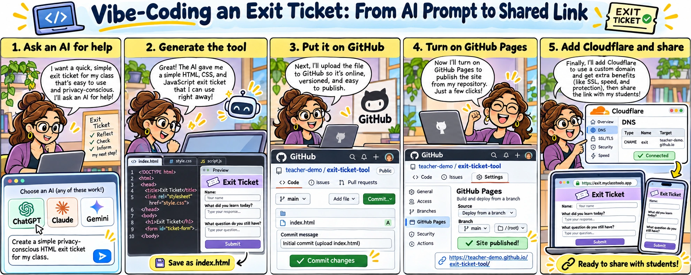
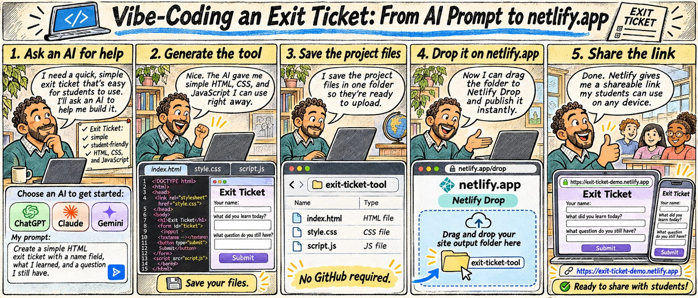

Follow an exit-ticket project from an AI prompt to a link you can open in a browser. Choose GitHub Pages for a repository-based workflow or Netlify Drop for a manual upload of site files.
Open either cartoon at full size to read its panels. The text walkthroughs below describe the same sequence. Use invented answers while testing; leave out the illustrated name field when the activity works without it.
GitHub Pages

Open full-size GitHub cartoon · Download original GitHub PNG

The GitHub cartoon in text
- Ask an AI for help. A teacher describes a simple, privacy-conscious exit ticket for a class.
- Generate the tool. The assistant produces HTML, CSS, and JavaScript. The teacher saves an
index.htmlentry file and its supporting files. - Put the files on GitHub. Upload the site files to a repository and commit the change.
- Turn on GitHub Pages. In the repository's Pages settings, choose the publishing source that contains the entry file. Open the resulting site URL and test it.
- Optionally add a custom domain. The cartoon uses Cloudflare for this step. A custom domain and Cloudflare are optional; GitHub Pages already supports HTTPS. Review the classroom journey before sharing the link.
For the service's current controls, use GitHub's Pages setup instructions and HTTPS guidance.
Netlify Drop

Open full-size Netlify cartoon · Download original Netlify PNG

The Netlify cartoon in text
- Describe the activity. Ask the assistant for an exit ticket with a clear learning task.
- Generate and test the tool. Review the HTML, CSS, and JavaScript with invented answers.
- Save the project files together. A simple static site can contain
index.html,style.css, andscript.js. For a project with a build step, build locally and use the finished output folder. - Upload the site folder. Open Netlify Drop and drag the folder containing the deployable site files into its upload area. The cartoon's browser labels are illustrative; use this link to reach the service.
- Open and review the site. Test the resulting URL on the devices your learners will use before sharing it. For later changes, upload the updated output folder through the existing site's Deploys page.
Manual uploads do not run a build command for you. See Netlify's deployment instructions for its current workflow.
Check before sharing
Use Three checks before you share to review education privacy, security, and design for function. Keep your evidence in the launch review.